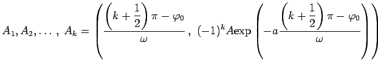
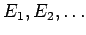

Inhalt Index DeskTop Bronstein

 Funktionen und ihre Darstellung Trigonometrische Funktionen (Winkelfunktionen) Beschreibung von Schwingungen
Funktionen und ihre Darstellung Trigonometrische Funktionen (Winkelfunktionen) Beschreibung von Schwingungen


Die Funktion
| (2.131) |
liefert für x >0 die Kurve einer gedämpften Schwingung.
Die Schwingung erfolgt um die x-Achse, wobei sich die Kurve asymptotisch der x-Achse nähert. Dabei wird die Sinuskurve von den beiden Exponentialkurven eingehüllt, indem sie diese in den Punkten

berühren. Die Schnittpunkte mit den Koordinatenachsen sind
.
Die Extrema befinden sich bei
die Wendepunkte  bei mit .
Als logarithmisches Dekrement der Dämpfung wird bezeichnet; yi und yi+1 sind die Ordinaten zweier benachbarter Extrema.